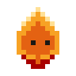
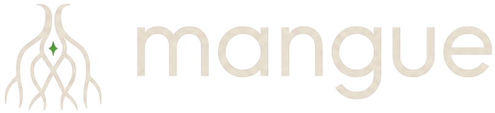

Ideias fora
de órbita.
Um pequeno estúdio.
Escolha um mundo para descobrir.
CindraUm lugar para organizar a vidaDisponível
CommissionMatchO encontro entre ideias e artistasEm prévia
MangueHistórias que criam caminhosEm desenvolvimento
Três mundos. Uma viagem.

O que está passando pela sua cabeça?
Escolha um pensamento. A gente encontra um lugar.Exemplo
Amanhã tenho uma reunião às 10h. Gastei R$ 32 no almoço e quero estudar espanhol esta semana.
Você decide o que fica.
Um pouco mais
de espaço para pensar.
Agenda
Um espaço no seu dia.
Finanças
Cada detalhe no lugar.
Aprendizado
Um pouco, todos os dias.
Uma pequena experiência de organização, com dados de exemplo.

CommissionMatchVisitar a préviaSua ideia. O traço de alguém.
Um encontro que começa pela arte. Explore os traços da nossa prévia.
Mundos imaginados
Fantasia em cada detalhe.
1 / 3
Gravuras de referência. Em prévia.
Designed by rawpixel.com / Freepik

Toda escolha
cria uma história.
Escreva mundos. Conecte possibilidades.
Descubra o próprio caminho.
O caminho aparece
quando você escolhe.
A carta entre as raízes
À margem